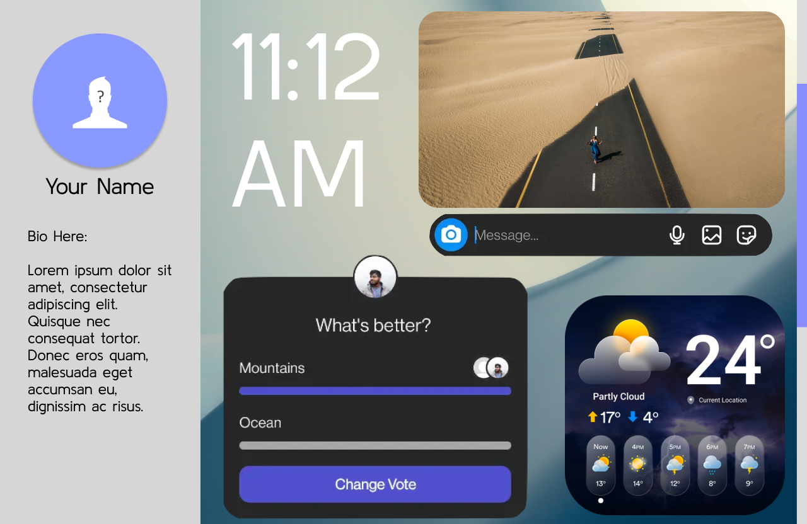

This first UI design is intended to be a social media profile dashboard:
Muse App
The Muse app UI is a mockup designed to give the user a music mix tailored to their taste based on the weather conditions of the day.
The acoustic ambiance matches the vibe outside.

Start Screen
This is the screen the user will see upon launch once the app is installed and downloaded from the marketplace

Muse App UI Library
The Muse app welcomes you with a start screen based on past interactions while displaying current conditions.

Muse App UI Play Screen
Once the sound is selected, the user can enjoy standard controls with lyrics displayed (if applicable).

Muse App UI Dynamic Sound Settings
Dynamic sound settings allow the user to tailor the tune to their taste.